Karman photography
One weekday across six students, then test morning. Every phone and laptop shows a real Karman screen, placed after the photo was made.
The cast
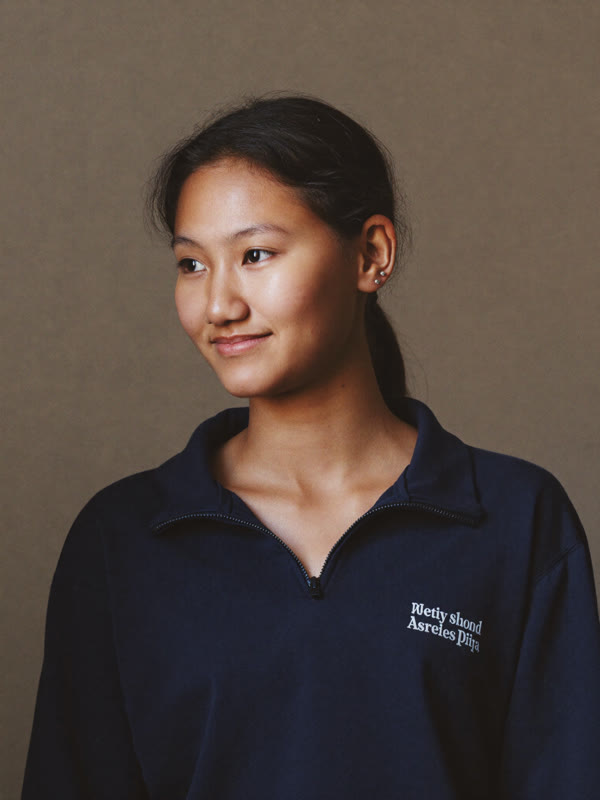
Ava, the commuter
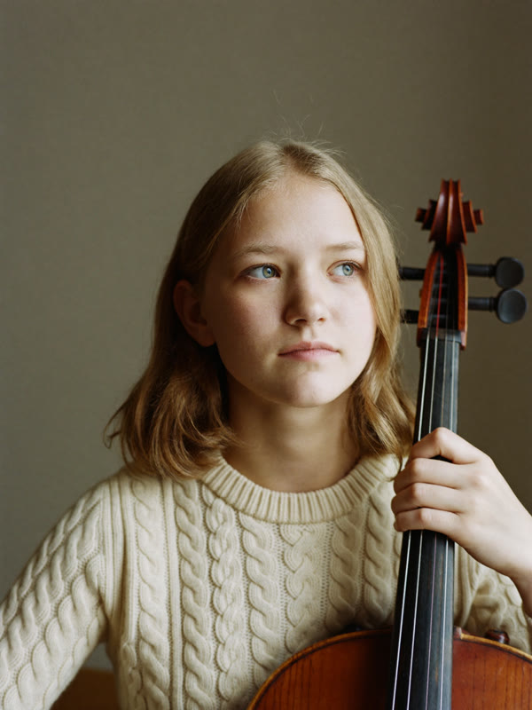
Clara, the musician
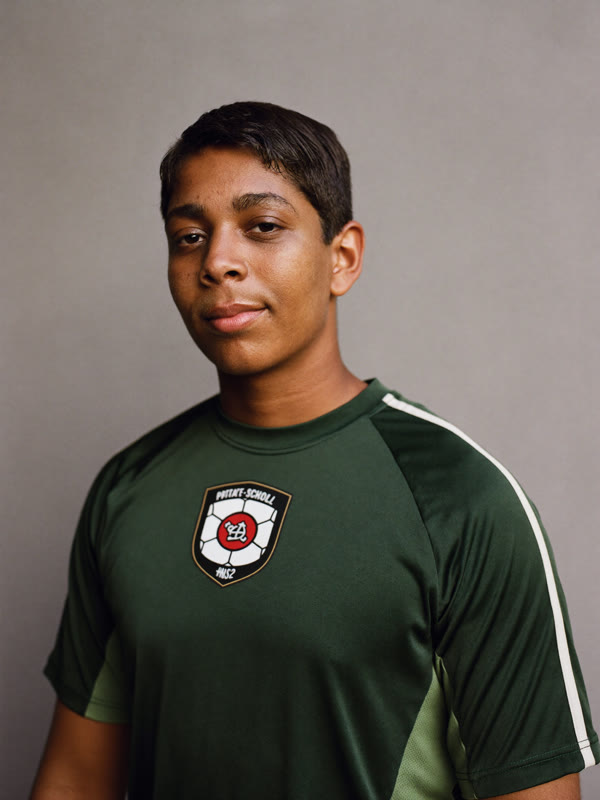
Mateo, the athlete
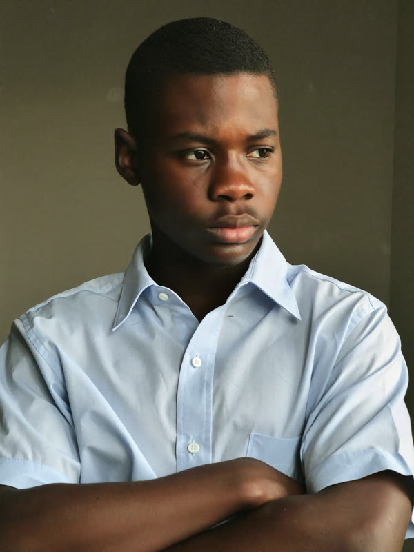
Julian, the intern
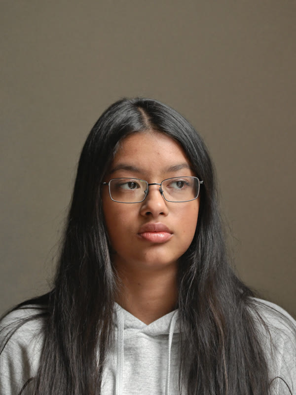
Priya, the live class
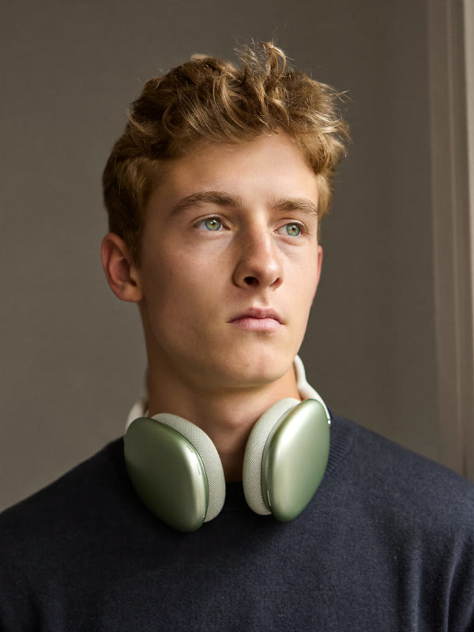
Ethan, private 1:1
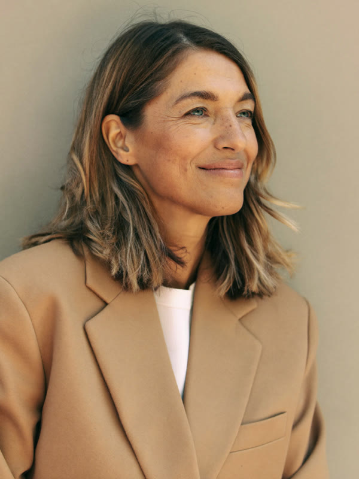
Parent, pickup line
Parent, lunch break
David, tutor
One weekday
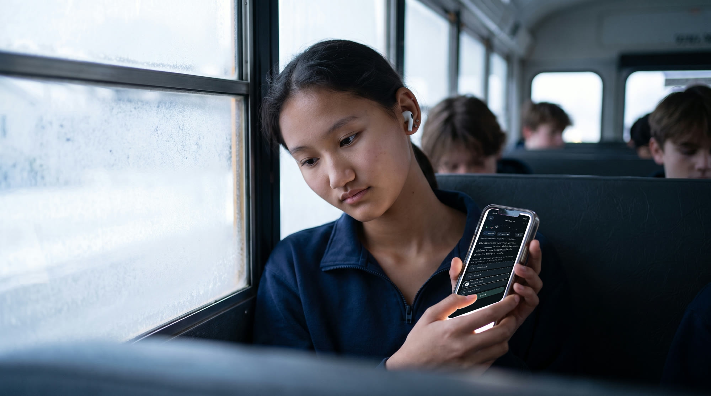
Ava, 6:50 a.m. Your Daily 10
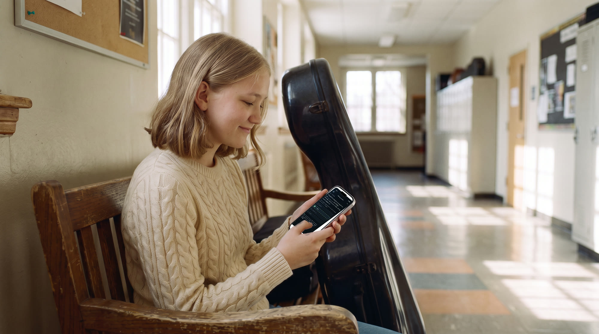
Clara, 12:40 p.m. Challenge question
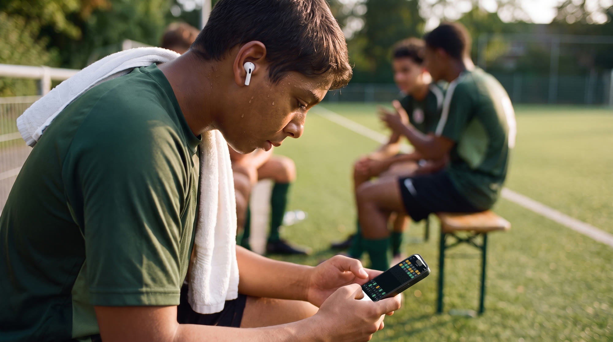
Mateo, 4:30 p.m. Wordline
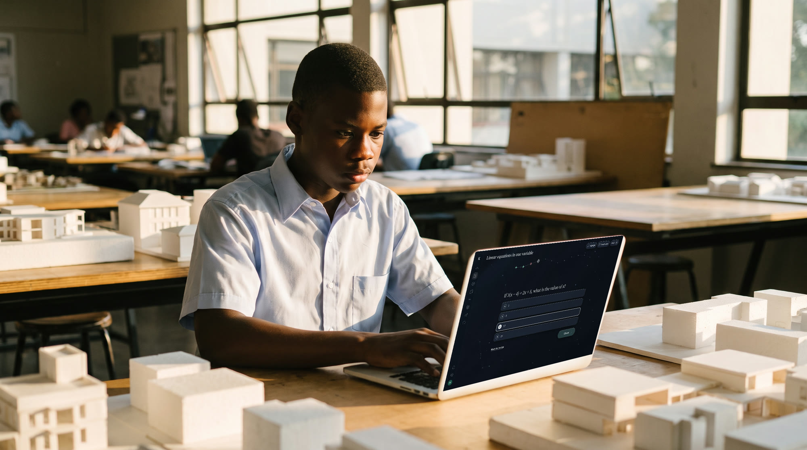
Julian, 5:45 p.m. Question bank
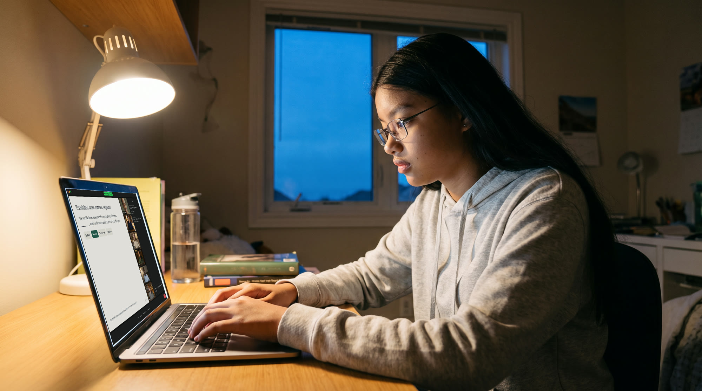
Priya, 8:00 p.m. Live class
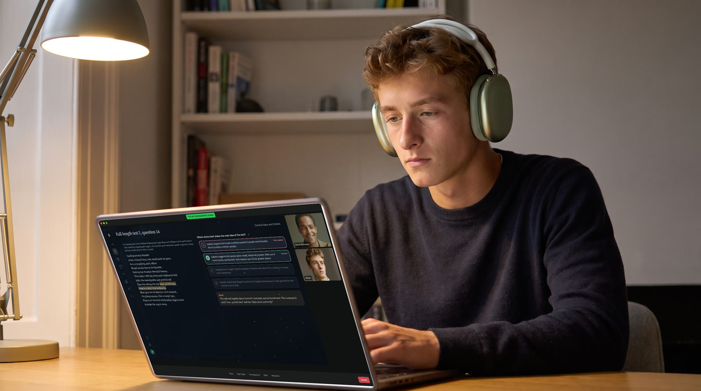
Ethan, 9:00 p.m. Full-length review session
Private tutoring and the cohort
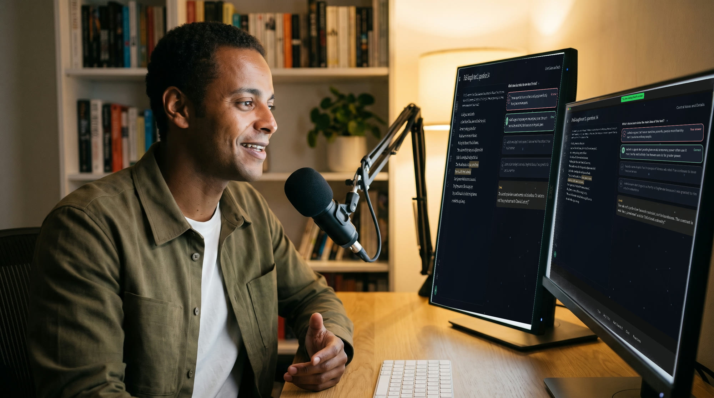
David, the review session from his side
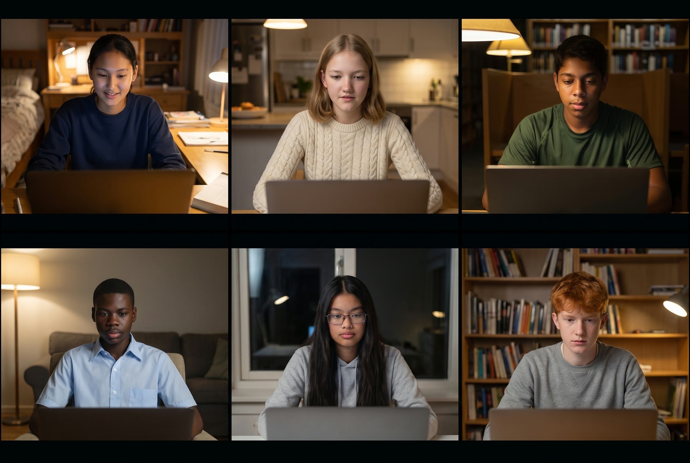
The cohort, the tiles inside the live class
Parents
Pickup line, the weekly update
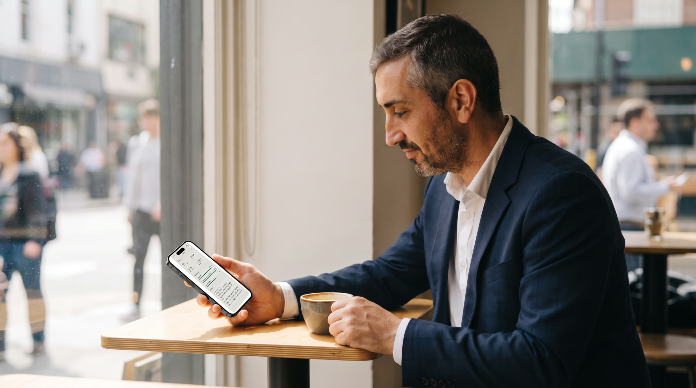
Lunch break, the weekly update
Test morning
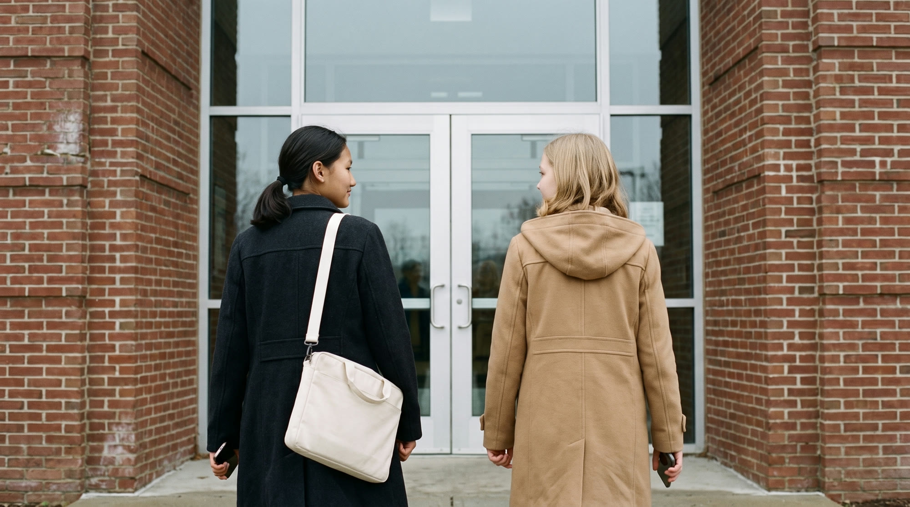
Walking in
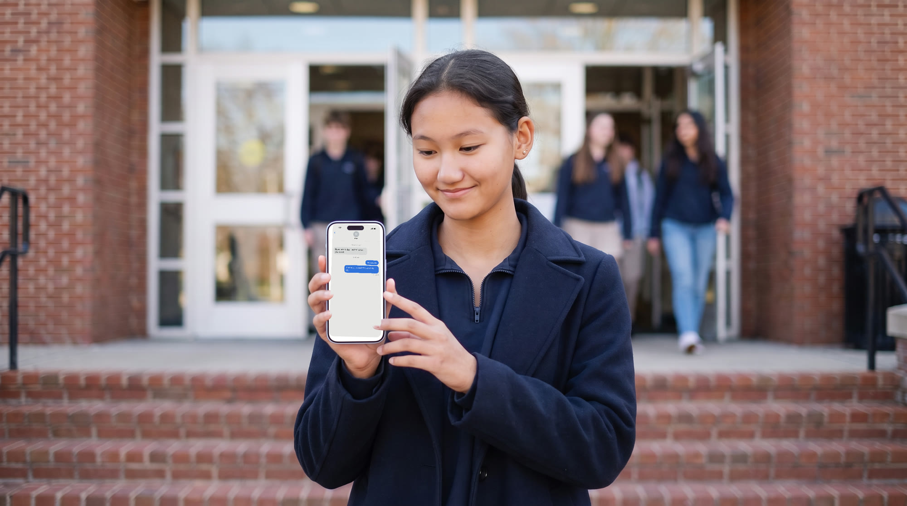
Walking out, "That was the easiest test of my life."